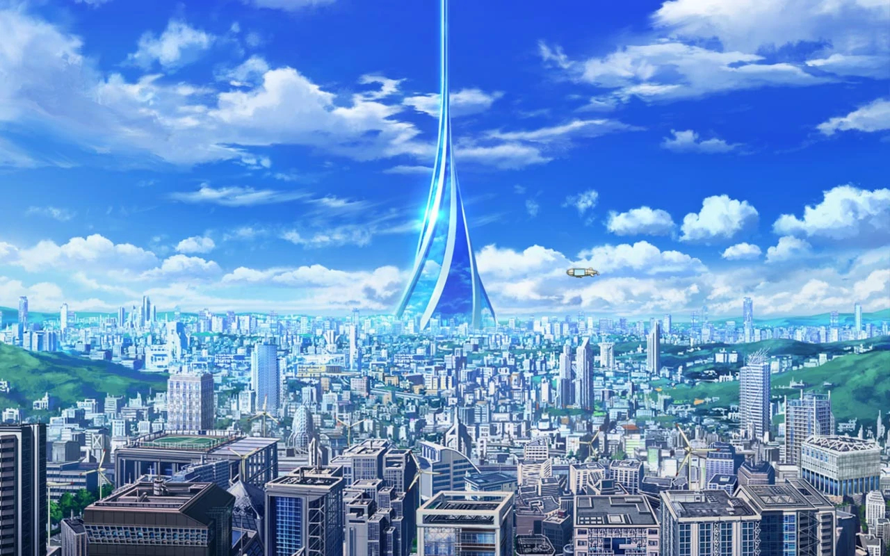

第一学区：
以行政机关为主的学区，感受不到其他学区所拥有的生活气息。
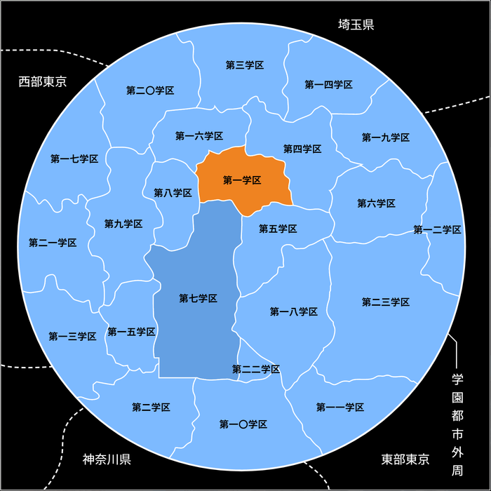
第二学区：
爆炸物或武器的试验场、警备员和风纪委员的训练所所在的学区。第二学区是机密最多的学区。
学区周围环绕着高耸的隔音墙，而且这地方还拥有能发射逆相位音波来消除噪音的设备

第三学区：
第三学区内有许多对外设施，有好几间国际展示场，饭店的档次也是数一数二。 基于不让机场噪音影响住宿设施的考虑，学园都市特地将迎宾设施安排在距离机场很远的第三学区， 作为对外门户的第二十三学区里有铁道直通第三学区
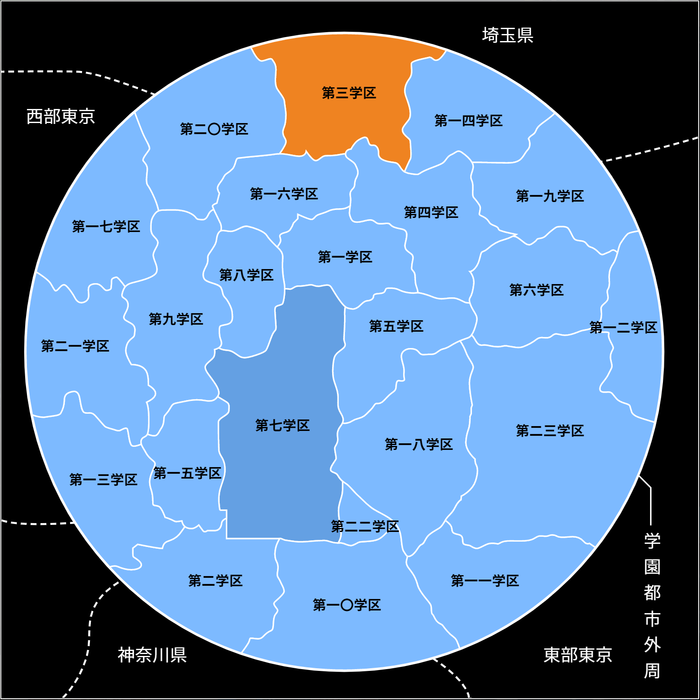
第七学区＜学校相关＞
•某高中(当麻所在学校)
•学舍之园
•常盘台中学(美琴所在学校)
•枝垂樱学园
•栅川中学
•常盘台中学学生寮
警备员第七学区本部
风纪委员第一七七支部
水穗机构病理解析研究所
S制药公司脑神经应用分析所
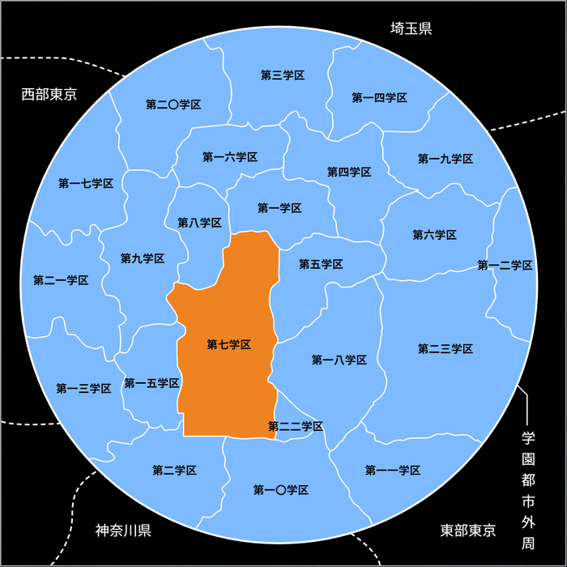
第十学区：
第十学区在学园都市中，以地价最便宜，治安也最糟糕而闻名。 因为这里地价便宜，所以充满各种“其他学区敬而远之”的设施，是个核能、细菌研究设施以及实验动物焚化场林立的学区。 学园都市唯一的墓地和少年感化院就坐落在这个学区。

第十一学区
第十一学区面对学园都市东侧外墙，其位置是陆路最大的进出口，担任陆路的物流基地。一天有进出七千多吨物资的第十一学区，仓库街相当广阔。
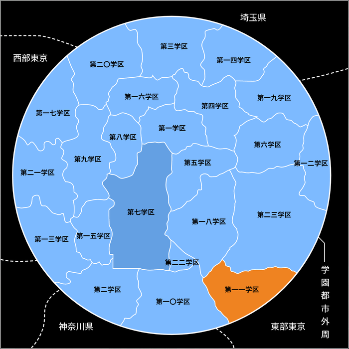
第十七学区
学园都市的西部郊区，是片宽广的工业地带，可以将自己所研发的实验品加以“商品化”。这个区域大多是无人控制的自动工厂，并且人口极端的稀少。

第二十二学区
长达四平方公里，所有学区中最小的一区，开发达地下数百公尺，是这个学园都市中最具未来气息的场所。第二十二学区的地面部分，与其他学区大相径庭，那里并不存在一般的房屋或大楼，只有一整排风力发电机螺旋叶片。而且不是普通学区里的“替代用电线杆”，而是像大楼的钢骨结构般将柱子纵横排列，再将大量螺旋叶片立体设置成三十楼的高度。
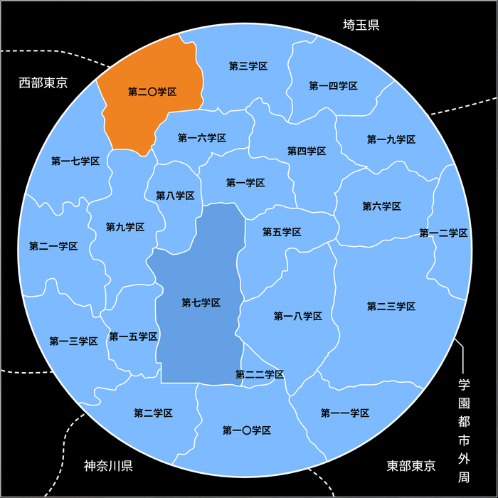
第二十三学区
第二十三学区是以航空、宇宙开发产业为主的特殊学区，该学区只有机场、发射台及相关设施，学园都市的机场都在这个学区，以航空及宇宙开发事业为目的，一般学生禁止进入的学区。这里除了民用机之外，还进行着守卫学园都市制空权的战斗机及无人直升机等方面的开发。警卫体制即便是在大霸星祭期间中，也属于顶级。除了以外国人观光客为目标开放的国际机场外，其他部分在地图上只用空白表示
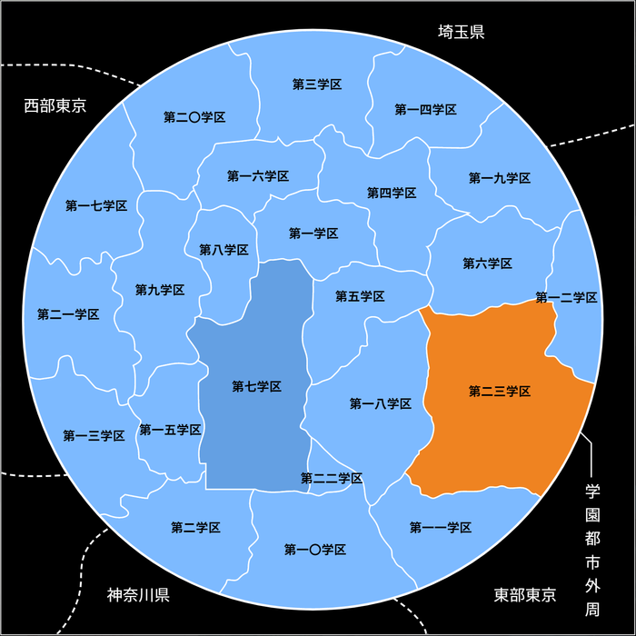
其他学区：
第四学区:集食品相关设施很多的学区，是学园都市内餐厅最多的场所，全世界一百九十个以上国家的美食都可以在这里找到。
第五学区:很多一般大学跟短期大学。服饰店跟餐厅等的品位跟其他学区相比，有种比较成熟的气息。
第六学区:娱乐设施集中的学区。有世界级的游乐园
第八学区:由老旧商店街和新型大厦群相结合的教职员居住区。
第九学区:由美术工艺相关学校的集中学区。
第十二学区:神学系学校集中并且有各国风情的街道的学区。
第十五学区:既是学园都市最繁华的学区，也是各种流行元素的发源地。电视台和各种媒体机构林立在这个学区，也是整个学园都市地价最昂贵的地方。地标建筑是巨型商业大楼“类钻”，同时它也是第十五学区的车站大楼。
第十六学区:有很多提供高薪打工机会的设施所在的商业规划区。
第十八学区:能力开发相关学校集中的学区，也是“学舍之园”的最大竞争对手。
第十九学区:由于再开发失败而沉寂了大半年的学区，该学区商店比较老旧，是前时代的风格。
第二十学区:学园都市中体育工学学校集中的学区。学园都市水源地所在的学区，也是学园都市中唯一的山岳地带。这个学区的水源和动植物研究相当知名，同时在天文学研究方面也是广为人知。
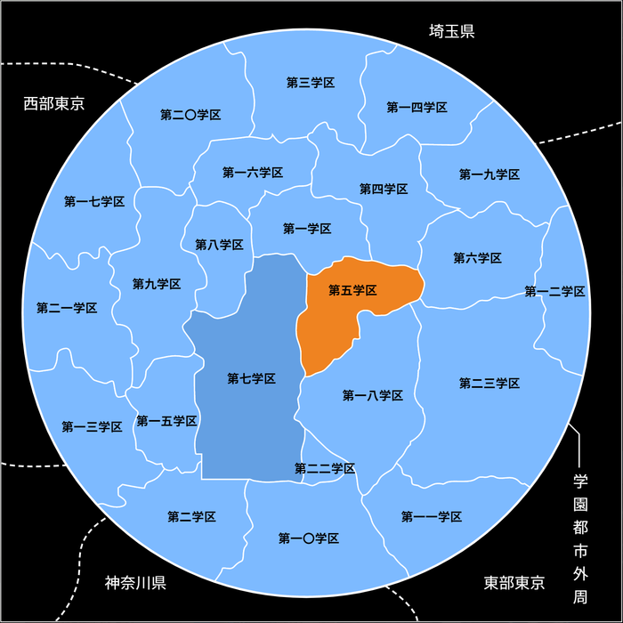
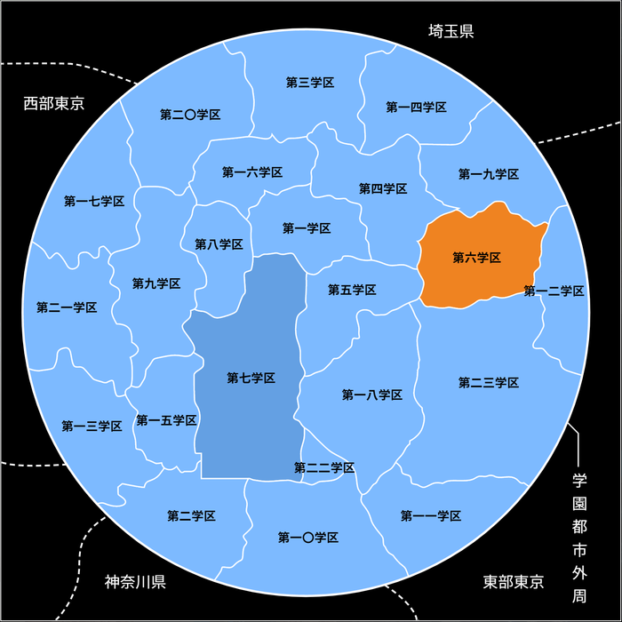
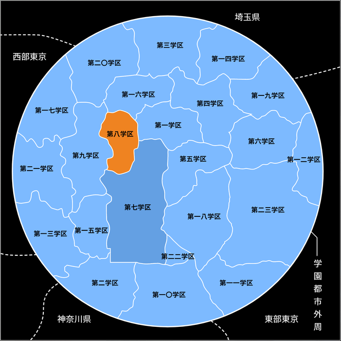
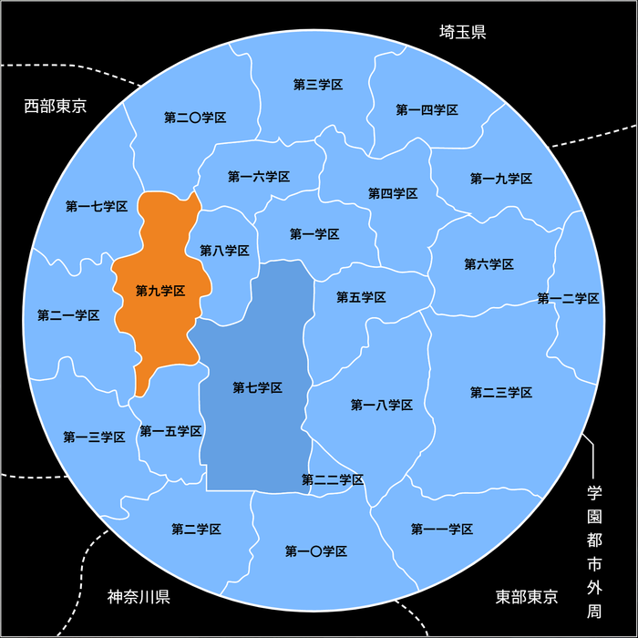
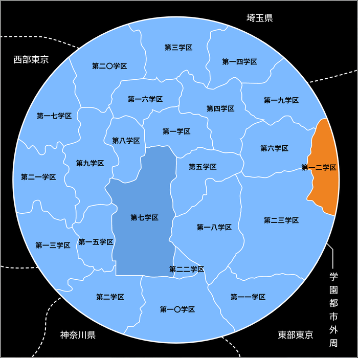
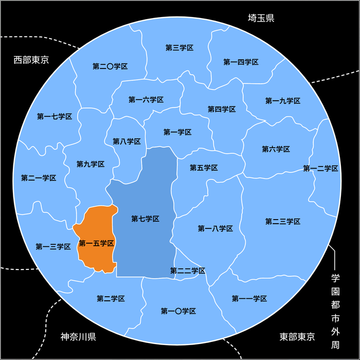
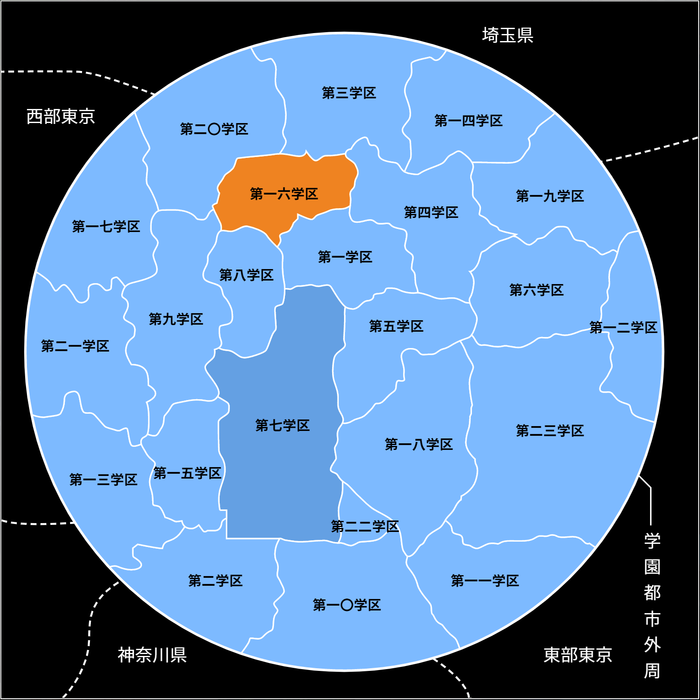
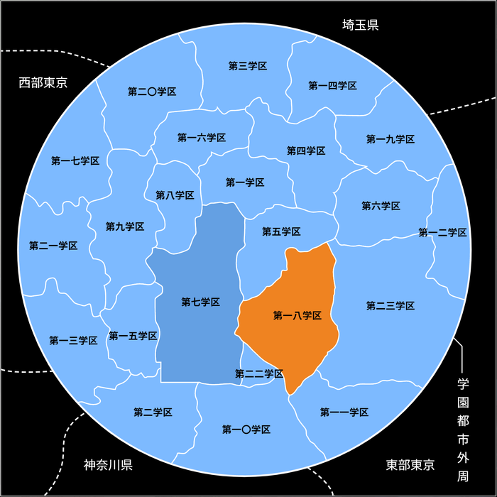
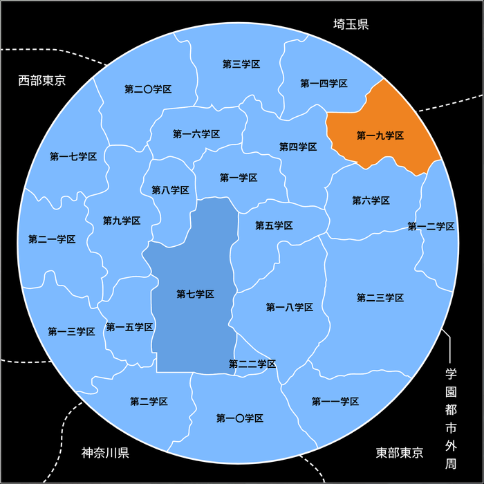
回到主页